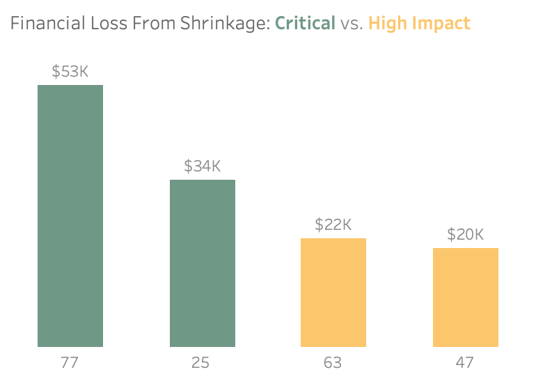
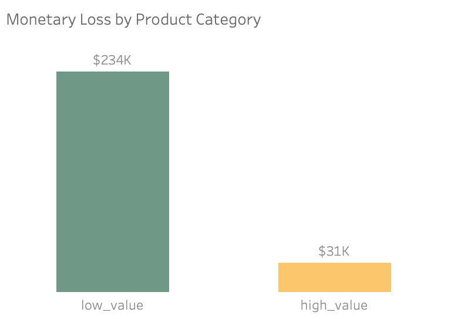
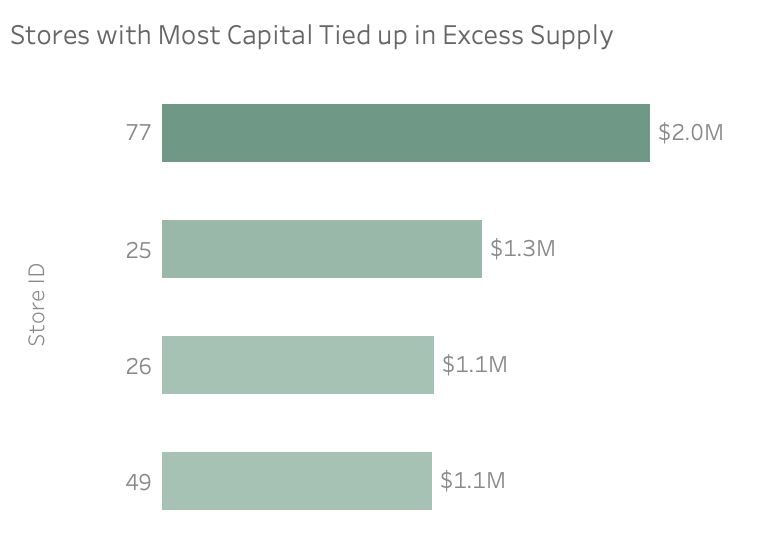
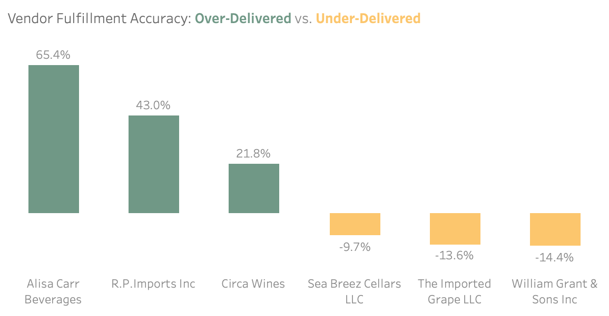
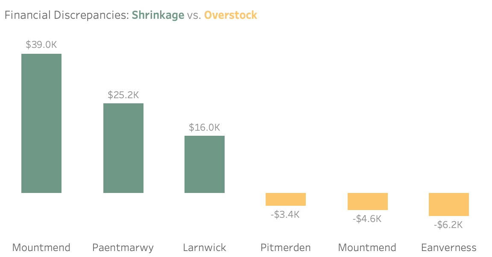

Bibitor LLC is a retail wine and spirits company operating ~80 stores across the fictional state of Lincoln. Annual sales range between $420–450M, with COGS around $300–350M. Despite strong revenue, store-level shrinkage (unexplained inventory loss) was increasing, reducing profit margins and creating stock imbalances: some stores were overstocked, while others frequently ran out of top-selling products.
The Challenge: Identify where inventory is disappearing, what’s tying up capital, and which operational failures are driving both issues.
This analysis identifies two major financial risks impacting Bibitor LLC:
Key findings show that 65% of all shrinkage is localized in just four
high-risk stores (notably Store 77 and Store 25), which also suffer from
the highest levels of excess inventory.
Additionally, systemic stock
imbalances are being worsened by significant vendor fulfillment
inaccuracies, including a 35K unit delivery variance from William Grant
& Sons Inc.
By focusing audits on high-risk locations and enforcing
vendor accountability, Bibitor LLC can release millions in trapped
capital and stabilize profit margins.
View Dashboard here.
Inventory shrinkage is highly concentrated rather than evenly distributed across the chain. Four locations—Stores 77, 25, 63, and 47—account for approximately $129K, or 65%, of the total $200K annual revenue loss. These stores represent a combined $94K in direct cost exposure and an additional $35K in lost margin, indicating that shrinkage impact extends well beyond inventory write-offs. Store 77 presents the highest financial risk, with over $53K in exposure, likely amplified by its operational complexity and large SKU assortment (7,344 SKUs).
Business Implication: Shrinkage is concentrated rather than systemic. Because unrealized margin exceeds direct write-offs, the true financial impact is understated in accounting records. The concentration allows leadership to focus audits and controls on a small set of high-impact stores instead of applying broad, inefficient interventions.

While high-value products show a slightly higher average loss rate, low-value items account for 88% of total shrinkage value ($233K of $264K). Shrinkage is therefore driven primarily by high-volume, low-priced SKUs rather than concentrated losses in premium products.
Business Implication: The dominance of low-value items in total shrinkage suggests that operational factors—such as receiving errors, miscounts, breakage, and inventory recording gaps—are likely major contributors to loss. Interventions focused solely on high-value theft prevention would address only a small portion of total exposure; broader process controls are required to materially reduce shrinkage.

Across the network, 8,198 distinct SKUs exceed 90 days of supply, tying up approximately $28M in working capital (calculated as the sum of inventory value across all affected SKUs). Excess inventory is highly concentrated, with four stores (77, 26, 49, and 25) alone accounting for approximately $5.5M in tied-up capital. Store 77 is the single largest contributor, holding nearly $2M in slow-moving stock. Liquidity risk is most severe in Stores 64, 77, 40, and 49, where inventory-weighted average days of supply exceed 700+ days, indicating prolonged stagnation.
Business Implication: Inventory inefficiency poses a larger structural risk than shrinkage. At an 8% cost of capital, excess stock generates ~$2.24M in annual opportunity cost, while prolonged holding periods increase damage and obsolescence risk. Unlike shrinkage, this exposure compounds over time.

Inventory variance is concentrated among specific vendors rather than occurring randomly. William Grant & Sons Inc shows cumulative under-deliveries exceeding 35,000 units, while Alisa Carr Beverages over-delivered by approximately 65% relative to ordered quantities. These deviations are consistent across multiple products, indicating persistent fulfillment inaccuracies.
Business Implication: Vendor delivery reliability is a direct driver of inventory imbalance. Under-delivery creates stockouts and lost sales, while over-delivery increases capital lock-up. Because variance is concentrated among a small number of suppliers, this represents a manageable counterparty risk rather than a systemic supply-chain failure.

Losses cluster geographically. Mountmend (Store 77) and Paentmarwy (Store 25) together account for over $64K in shrinkage. In contrast, locations such as Eanverness (Store 49) and Pitmerden (Store 40) exhibit significant overstock relative to recorded deliveries.
Business Implication: Operational failures are not uniform across the network. Loss-heavy cities indicate breakdowns in inventory control or security, while overstock-heavy locations suggest receiving and recording failures. This heterogeneity invalidates one-size-fits-all solutions and highlights the need for differentiated operational diagnosis.

Target Stores: 77, 25, 26, 49
Rationale: These locations are repeatedly flagged
across shrinkage exposure, excess days of supply, and overstock
indicators, signaling compounding inventory risk rather than isolated
variance. Addressing these stores first delivers the highest financial
return by reducing margin erosion, releasing tied-up capital, and
preventing further operational leakage.
🔍 Actions & Execution:
✅ Success Metrics:
Target Stores: 63, 47, 50, 45
Rationale: These stores exhibit material risk in a
single dimension—either elevated shrinkage or excess inventory
volume—but have not yet developed compounding failure patterns. Early,
targeted controls reduce the likelihood of escalation into high-risk
profiles observed in Phase 1 locations.
🔍 Actions & Execution:
✅ Success Metrics:
Target Category: Low-value products
Rationale: Low-value products contribute approximately
$233K in shrinkage value and account for the highest
number of units lost. While high-value items show a marginally higher
loss rate, low-value products represent the dominant driver of total
shrinkage due to their scale.
🔍 Actions & Execution:
✅ Success Metrics:
Target Area: Vendors with persistent over-delivery
and under-delivery patterns
Rationale: Inventory
variance is concentrated among a small number of vendors rather than
occurring randomly across the supplier base. Persistent under-delivery
contributes to stockouts and lost sales, while over-delivery increases
excess inventory, capital lock-up, and downstream shrinkage risk.
Addressing these vendors directly offers a high-leverage opportunity to
stabilize inventory accuracy without broad supply-chain disruption.
🔍 Actions & Execution:
✅ Success Metrics:
| Metric | Value | Business Context |
|---|---|---|
| Total Shrinkage Loss | $199K | Annual revenue impact across 41 stores |
| Capital Trapped | $28M | Total value of inventory exceeding the 90-day supply threshold |
| Worst Performing Store | Store 77 | Accounts for $53K in loss; ranks 1st in shrinkage despite 6th in sales |
| Top Vendor Issue | -14.44% | William Grant & Sons Inc under-delivered by 35.9K units |
| Loss Concentration | 65% | $129K of total losses are localized within just 4 key stores |
| Product Pattern | 88% | Loss is dominated by low-value items, suggesting process errors over theft. |
Why These Metrics Matter: They bridge the gap between operational data (units lost) and business outcomes (profit impact), making insights actionable for decision-makers.
Tools: PostgreSQL • DBeaver • Tableau
Dataset: 15M+ records - Hub of analytics education
Architecture: Raw → Clean → Gold (medallion approach)
Data Flow:
Raw CSV Files (6 tables: stores, products, vendors, inventory, sales, purchases)
↓
Clean Layer (Views: deduplication, validation, type casting)
↓
Gold Schema (Star schema with materialized aggregations)
Why This Architecture: The Gold schema ensures
consistent business definitions across all downstream analysis—mimicking
the semantic layer approach used by enterprise retail analytics teams.
Detailed technical documentation here.
bibitor_llc/
├── License.txt
├── README.md
├── bibitor_viz.twb
├── data_catalog.md
├── docs/
│ ├── 01_schema_layers.svg
│ ├── 02_ERD_bibitor_llc.svg
│ ├── images/
│ └── results/
└── sql/
├── 01_ddl/
├── 02_load/
├── 03_test/
├── 04_analytics/
└── db_init.sql
This project is licensed under the MIT License. See the License file for details.